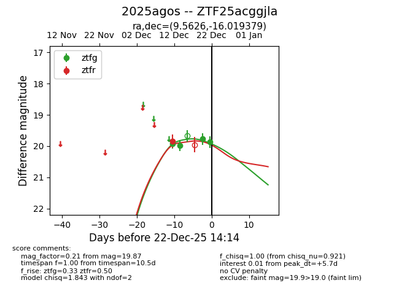
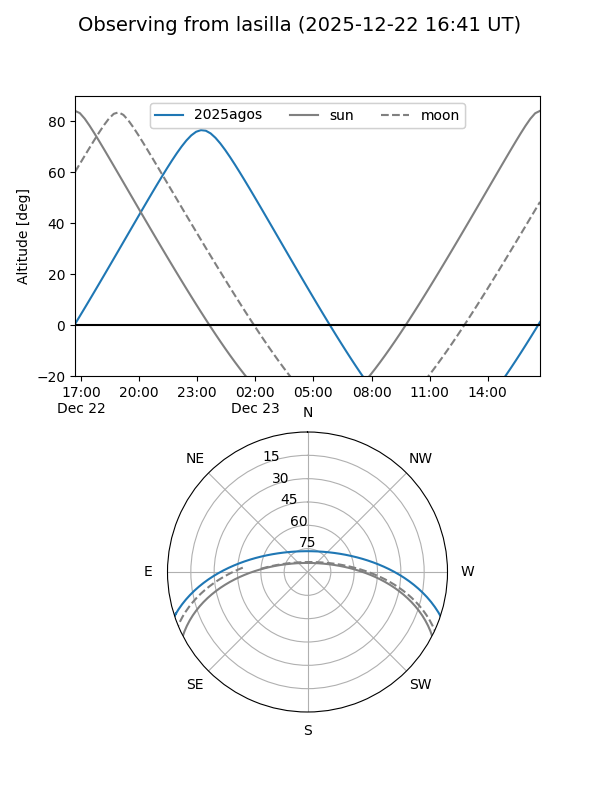
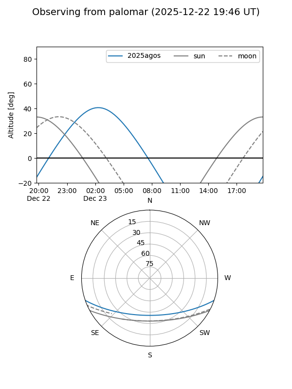
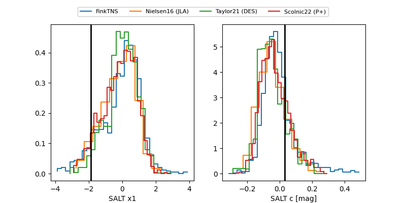

2025agos
Target 2025agos at 2025-12-22 14:16
Aliases and brokers:
FINK: fink-portal.org/ZTF25acggjla
Lasair: lasair-ztf.lsst.ac.uk/objects/ZTF25acggjla
ALeRCE: alerce.online/object/ZTF25acggjla
TNS: wis-tns.org/object/2025agos
YSE: ziggy.ucolick.org/yse/transient_detail/2025agos
alt names
ZTF25acggjla (ztf,fink_ztf)
2025agos (tns,yse)
Coordinates:
equatorial (ra, dec) = 9.5626,-16.01938
equatorial (HMS+DMS) = 00:38:15.02,-16:01:09.76
galactic (l, b) = (106.8668,-78.47770)
Flags:
Photometry:
last ztfg=19.87, ztfr=19.84
4 ztfg, 1 ztfr detections
Lightcurve

Visibility


Additional plots
